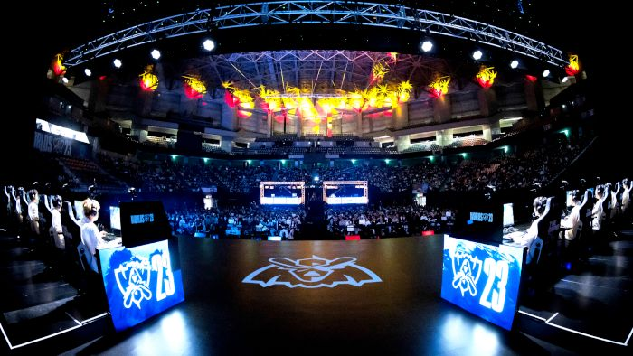
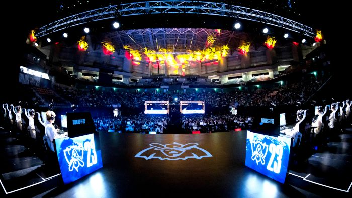

Mes Hobbies
Mes passions sont multiples, aujourd'hui certaines d'entre elles font partie de mon quotidien.
Le sport premièrement est sûrement aujourd'hui la passion qui est la plus intense et la plus présente dans mon quotidien.
Je fais actuellement du volleyball dans le club du volleyball Pexinois Niort, évoluant en pré-national (ainsi qu'en renfort pour l'équipe départementale) en tant que central.
Cette activité est omniprésente dans mon quotidien, trois entraînements et deux matchs par semaine d'octobre à mars ont été mon rythme durant cette saison sportive.
J'ai aussi comme projet important dans ma vie depuis quelques années d'être un joueur semi-professionel (rémunéré pour jouer), c'est donc quelque chose qui me motive énormément.
La saison se déroulant bien mieux que je ne l'espérais pour moi avec une première place de championnat pré-national play-down et un titre de champion départmental avec 100% de matchs débutés et joués cette saison.
En dehors de mes résultats et du temps passé, c'est ma passion pour ce sport et le sport en général qui m'anime.
Avec 11 ans de football pratiqué, 7 ans de tennis et maintenant 4 ans de volley, je peux affirmer que c'est dans le sport que je me sens le plus à ma place.
J'ai toujours su m'investir dans mes passions de par le rôle de capitaine dans chaque discipline à laquel j'ai participé mais aussi dans l'investissement en dehors des terrains qui sont pour chaque association des actions importantes.
Autres que ma passion pour le sport, j'ai récemment développé une attache particulière pour les championnats d'e-sport.
Phénomène grandissant dans le monde actuellement, et moi-même étant (anciennement) un grand adepte de ces jeux compétitifs, ces compétitions professionnelles qui attirent aujourd'hui des millions de gens sont une attraction qui reflète aussi une des visions que je soutiens qui est celle de l'avenir des jeux vidéos.
Toujours vu comme des jeux pour enfants, l'univers de l'esport s'est professionnalisé offrant aujourd'hui un contenu qualitatif semblable aux autres sports "physiques".
J'ai aussi une passion pour les romans de science-fiction, ayant commencé à lire ces livres jeunes, j'ai développé un intérêt pour cet univers futuriste ou bien fantaisiste.
Cette passion aujourd'hui, elle se ressent encore dans l'envie de travailler dans des domaines futuristes tels que l'intelligence artificielle mais aussi simplement en étant devenu un adepte de séries et films de science-fiction.
 
